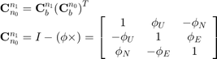

计算角1和角2之间的失准角（此函数适用于批量处理）

function phi = aa2phi(att1, att0) % 功能：计算角1和角2之间的失准角（此函数适用于批量处理） % 输入：att1 - 欧拉角1 att1=[pitch1;roll1;yaw1] % att0 - 欧拉角0 att0=[pitch0;roll0;yaw0] % 输出：phi - 导航系和理想导航系之间的失准角 phi=[phiE;phiN;phiU] [m, n] = size(att1); if n==1 % no batch processing phi = qq2phi(a2qua(att1), a2qua(att0)); return; end phi = att1; s1 = sin(att1); c1 = cos(att1); s0 = sin(att0); c0 = cos(att0); for k=1:m si = s1(k,1); sj = s1(k,2); sk = s1(k,3); ci = c1(k,1); cj = c1(k,2); ck = c1(k,3); Cn1b = [ cj*ck-si*sj*sk, -ci*sk, sj*ck+si*cj*sk; cj*sk+si*sj*ck, ci*ck, sj*sk-si*cj*ck; -ci*sj, si, ci*cj ]; si = s0(k,1); sj = s0(k,2); sk = s0(k,3); ci = c0(k,1); cj = c0(k,2); ck = c0(k,3); Cn0b = [ cj*ck-si*sj*sk, -ci*sk, sj*ck+si*cj*sk; cj*sk+si*sj*ck, ci*ck, sj*sk-si*cj*ck; -ci*sj, si, ci*cj ]; Cnn = Cn1b*Cn0b'; phi(k,1:3) = [Cnn(2,3)-Cnn(3,2), Cnn(3,1)-Cnn(1,3), Cnn(1,2)-Cnn(2,1)]/2.0; end